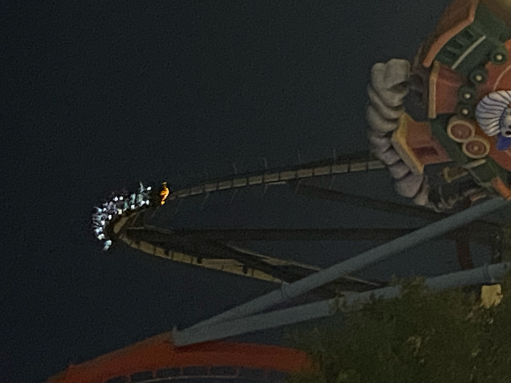

Jenny wasn’t feeling great so just the Ellises went into the park in the morning. Our first ride was Coco Piloto, a slow high ride that travels round the Sesame Street area. Freya was very far from impressed.
The kids went on a jet ski ride next and then I joined them for some rapids. Alison used her “someone needs to look after the phones” excuse to avoid joining us. The kids got a bit wet and I looked like I’d had a messy accident. All fine as we dried so quickly.
The kids managed a cyclone ride before the desire for lunch and for meeting a feeling-better Jenny paused the ride fun.
Back at the hotel, the bigs did some reading and sunbathing. The kids did some swimming and sunbathing (pleasingly, the show from earlier in the week seems to have satisfied them, so no repeat performances 😀).
We had the earliest possible buffet tea and then into the park again for some double-dipping. We needed a plan, it was a good plan, and we executed it perfectly.
We wanted to do Shambala in the dark and me and Alison felt like we should do Dragon Khan at some point. So, that’s what we did and in that order. We all came off Shambala smiling. Us bigs came off Dragon Khan sweating while trying not to throw up. We were done.
The timing worked perfectly for the Polynesian fire and dance show. Freya and Jenny enjoyed the topless beefcakes dancing and baton-twirling. The show was great and the crowd got into it.
The kids did the Sesame Street shooty ride on the way back to watch the end-of-day parade and show. Again, perfect timing and a place available just under the projector so that we would get a square-on view of the show.
First up was the parade. It was fine but a poor relation to the Disney parades we were used to. I think it’s job is just to get people to the exit ready for the show.
The show itself was great. Being square-on meant we saw the projection onto the water spray from the start, the fireworks were symmetrical and the chaps on flyboards were right in front of us.
Back to the hotel for midnight. Thank goodness it’s late breakfast tomorrow.
